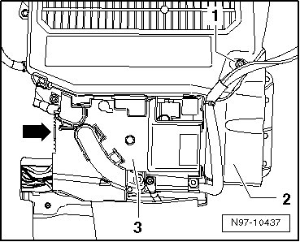
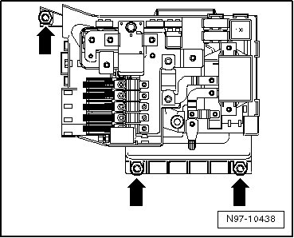

Back-Up Fuse Box
Back-Up Fuse Box
CAUTION!
When disconnecting and connecting the battery, always perform the work procedure as described in the repair information --> [ Battery, One-Battery Layout, Disconnecting and Connecting ] Battery, One-Battery Layout, Disconnecting and Connecting. Not adhering to sequence will result in the deactivation of Main Battery Switch -E74- and subsequent damage to electrical system components.
• Additional information:
297The Touareg
298The Touareg Electrical System
The back-up fuse box is located under driver's seat next to the battery.
Removing
- Disconnect battery --> [ Battery, One-Battery Layout, Disconnecting and Connecting ] Battery, One-Battery Layout, Disconnecting and Connecting.
- Remove mounting bolt - 1 - and pull off air vent - 2 - upward.

- Release - arrow - cover - 3 - of back-up fuse box and remove it upward.
• If necessary, mark the equipment dependent allocation of individual wires to connection points in back-up fuse box.
- Loosen threaded connections and remove all wires from back-up fuse box connections.

- Unscrew mounting nuts (10 mm) - arrows - and remove back-up fuse box upward from vehicle.
Installing
Install in reverse order of removal.